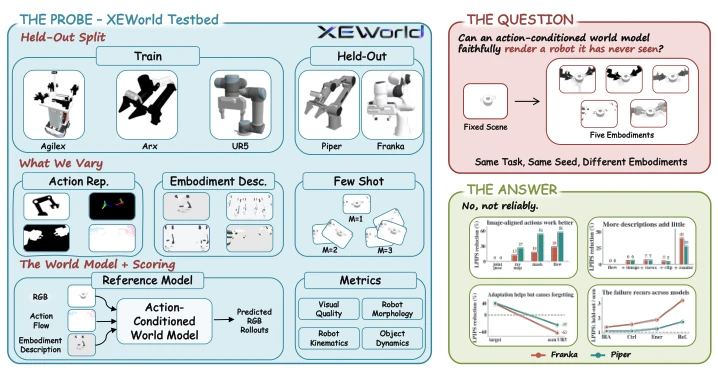
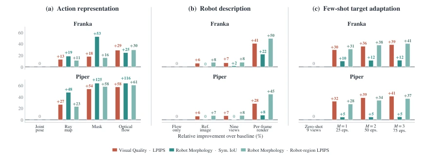
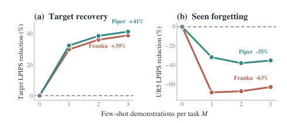
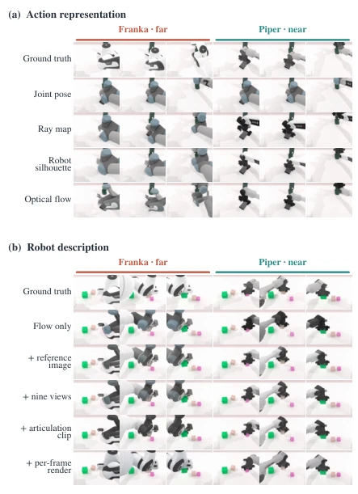
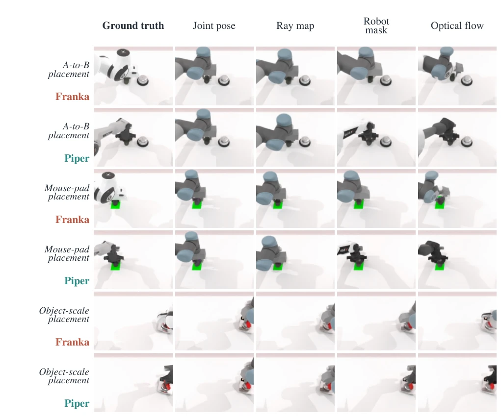
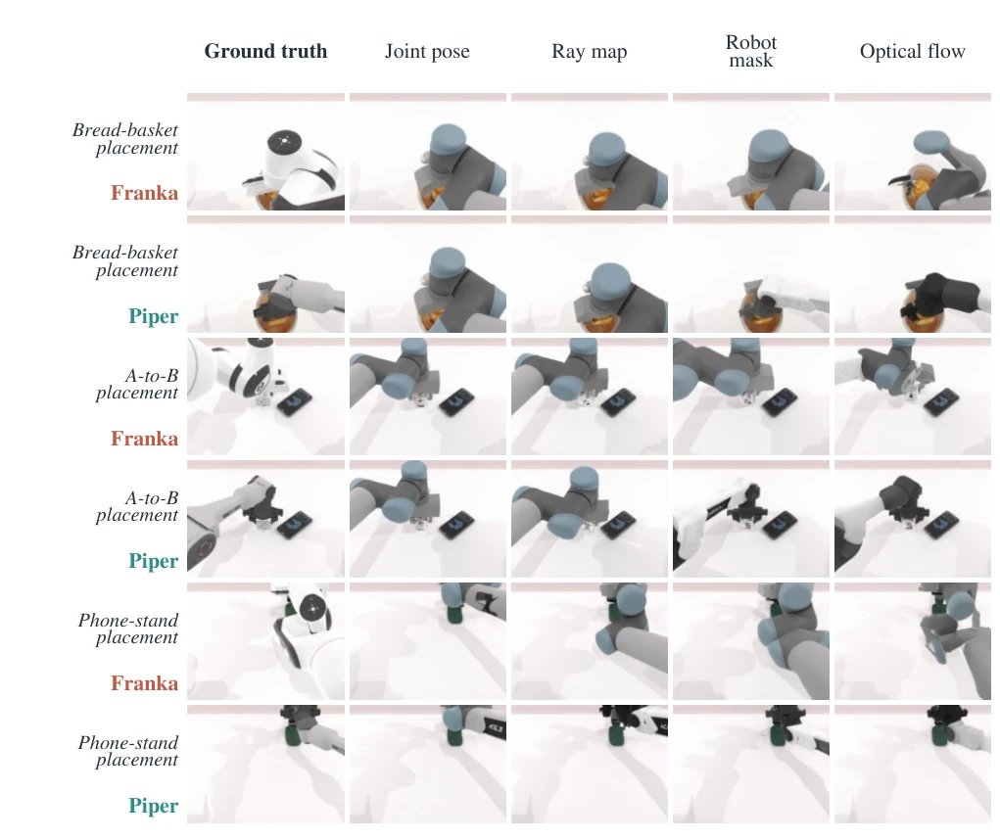
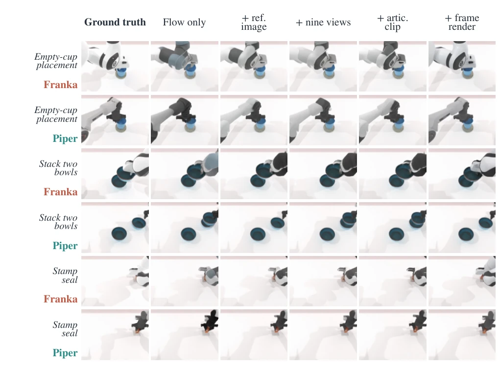
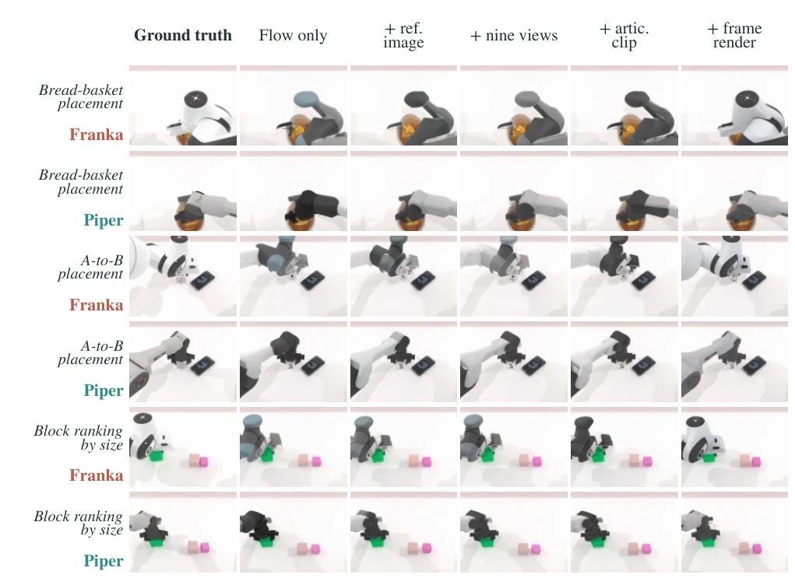

This paper pours cold water on the currently hot embodied world models. Although the XEWorld test set is ingeniously designed, the conclusion is quite stinging: most current action-conditioned world models are merely "2D visual pattern matchers" that fundamentally do not understand physical dynamics. They can perfectly reproduce trained robots, but once the shell is changed to an unseen one, the video collapses. More ironically, even if you show the model a static photo of the target robot, it still cannot learn; it requires aligned rendered images for every frame. This "rote memorization" generalization ability is worlds away from true physical simulation. Although the authors propose pixel-level action representation and spatiotemporal alignment solutions, the catastrophic forgetting problem caused by fine-tuning pours a second bucket of cold water on actual deployment. Overall, this is an excellent "debunking" paper, proving that simply piling up data or expanding model scale cannot solve the fundamental bottleneck of cross-embodiment generalization; architectural innovation is the way out.
研究动机Motivation
现有动作条件世界模型（Action-conditioned world models）在离线策略评估和规划中潜力巨大（Yang et al. 2024; Zhu et al. 2024），但评估范式存在严重缺陷。主流基准如 WorldArena (Shang et al. 2026a) 或 DreamGen Bench (Jang et al. 2025) 仅在训练过的机器人上进行评估，无法区分模型是学到了物理动力学，还是仅仅记住了特定机器人的视觉纹理。这种分布内评估（in-distribution evaluation）掩盖了模型泛化能力的不足。如果模型无法在未见过的机器人上渲染物理一致的视频，其作为通用模拟器的价值就存疑。因此，亟需一个能隔离“实体（Embodiment）”变量的测试床，验证模型是否真正解耦了物理环境与特定外观。XEWorld 正是为了解决这一根本性问题而诞生，旨在通过控制变量法，揭示当前架构在跨实体泛化上的真实短板，避免未来研究在错误的评估指标上浪费算力。
Existing action-conditioned world models (Action-conditioned world models) hold immense potential in offline policy evaluation and planning (Yang et al. 2024; Zhu et al. 2024), but the evaluation paradigm suffers from serious flaws. Mainstream benchmarks such as WorldArena (Shang et al. 2026a) or DreamGen Bench (Jang et al. 2025) are evaluated only on trained robots, unable to distinguish whether the model has learned physical dynamics or merely memorized the visual texture of specific robots. This in-distribution evaluation (in-distribution evaluation) masks the inadequacy of the model's generalization ability. If the model cannot render physically consistent videos on unseen robots, its value as a universal simulator is questionable. Therefore, there is an urgent need for a testbed that can isolate the "Embodiment (Embodiment)" variable to verify whether the model truly decouples the physical environment from specific appearances. XEWorld was born to solve this fundamental issue, aiming to reveal the true shortcomings of current architectures in cross-embodiment generalization through the method of controlling variables, avoiding future research wasting computing power on incorrect evaluation metrics.

Figure 1: The XEWorld cross-embodiment testbed. We introduce XEWorld to investigate whether action-conditioned world models genuinely capture generalizable physical dynamics, or merely memorize embodiment-specific visual patterns.
方法Method
XEWorld 构建了一个受控的跨实体测试床，核心在于“物理场景一致，机器人实体不同”。数据基于 RoboTwin 模拟器生成，包含 5 种双臂机器人（Aloha-Agilex, Arx-X5, UR5, Franka, Piper）和 25 个操作任务。训练集采用 3 训练/2 留出的划分，确保场景布局、物体姿态、光照和相机参数在所有机器人间字节级对齐，唯一变量是机器人本体。评测维度解耦为视觉质量、机器人形态、运动学和物体动力学，避免单一标量掩盖问题。参考模型基于 FlowWAM (Chen et al. 2026a) 改进，设计为解耦架构：输入分为场景 RGB、像素级动作信号（机器人掩码光流）和实体规范流。这种设计允许在推理时固定光流而改变实体描述，从而测试模型对形态信息的利用能力。实验干预包括动作表示（关节位姿 vs 光流）、机器人描述（单图 vs 多视图 vs 逐帧渲染）和少样本微调。特别是逐帧渲染条件，通过提供与目标运动完全时空对齐的外观信息，强制模型恢复形态，以此验证时空对齐的必要性。
XEWorld constructs a controlled cross-embodiment testbed, the core of which is "consistent physical scene, different robot embodiments." Data is generated based on the RoboTwin simulator, containing 5 types of dual-arm robots (Aloha-Agilex, Arx-X5, UR5, Franka, Piper) and 25 manipulation tasks. The training set adopts a 3-train/2-holdout split, ensuring scene layout, object pose, lighting, and camera parameters are byte-level aligned across all robots, with the only variable being the robot body. Evaluation dimensions are decoupled into visual quality, robot morphology, kinematics, and object dynamics to avoid masking problems with a single scalar. The reference model is improved based on FlowWAM (Chen et al. 2026a), designed as a decoupled architecture: inputs are divided into scene RGB, pixel-level action signals (robot mask optical flow), and embodiment specification flow. This design allows fixing the optical flow while changing the embodiment description during inference, thereby testing the model's ability to utilize morphological information. Experimental interventions include action representation (joint pose vs. optical flow), robot description (single image vs. multi-view vs. per-frame rendering), and few-shot fine-tuning. In particular, the per-frame rendering condition, by providing appearance information fully spatiotemporally aligned with the target motion, forces the model to recover morphology, thereby verifying the necessity of spatiotemporal alignment.

Figure 2: Impact of targeted interventions on unseen-embodiment generation. Bars report relative improvements over the baseline for the two held-out robots across different intervention strategies.
Experiments were conducted on two unseen robots, Franka and Piper. Results show that generation quality is strongly correlated with visual appearance distance (r=0.812), while weakly correlated with physical reachable workspace distance (r=0.549), confirming the model relies on visual similarity rather than kinematic similarity. Regarding action representation, pixel-level optical flow significantly reduces LPIPS error compared to numerical joint poses (reduced by 29% on Franka). Static robot descriptions (such as a single reference image) offer limited gains, while per-frame rendering can significantly recover morphology (LPIPS reduced by 50%). However, few-shot fine-tuning, while able to fix unseen robots, causes LPIPS error for seen robots (e.g., UR5) to skyrocket by 69%, triggering catastrophic forgetting. Cross-model comparisons (IRASim, Ctrl-World, etc.) also show that all architectures experience performance degradation on unseen embodiments, proving this is a common bottleneck of current video generation pipelines, not a single model defect.

Figure 4: Adaptation benefit and forgetting. Fine-tuning on the held-out robot reduces its LPIPS error, but increases the LPIPS error on the previously seen UR5 robot.

Figure 3: Pixel-space actions preserve structural coher- ence, while time-aligned robot cues recover identity. (a) Pixel-aligned action representations retain the held-out robot more faithfully during movement than numeric joint actions. (b) On a distinct episode, static robot descriptions change ap- pearance only modestly, whereas a per-frame render restores the target morphology.

Figure 6: Action-interface transfer across additional episodes. Each task contributes paired Franka and Piper rows. Columns hold the task, seed, target robot, and rollout time fixed while varying only the action representation. Dense pixel-space controls more consistently retain the held-out robot than numeric joints across A-to-B, mouse-pad, and object-scale placement.
其他图片Other Figures

Figure 7: Additional action-interface rollouts. Paired robot rows again isolate the action representation while holding scene state and rollout time fixed.

Figure 8: Robot conditioning across additional episodes. Each task again contributes paired Franka and Piper rows. Reference images, views, and articulation clips provide task-independent identity cues.

Figure 9: Additional robot-conditioning rollouts. The per-frame condition most directly restores target identity because its cue is aligned with the current rollout configuration.